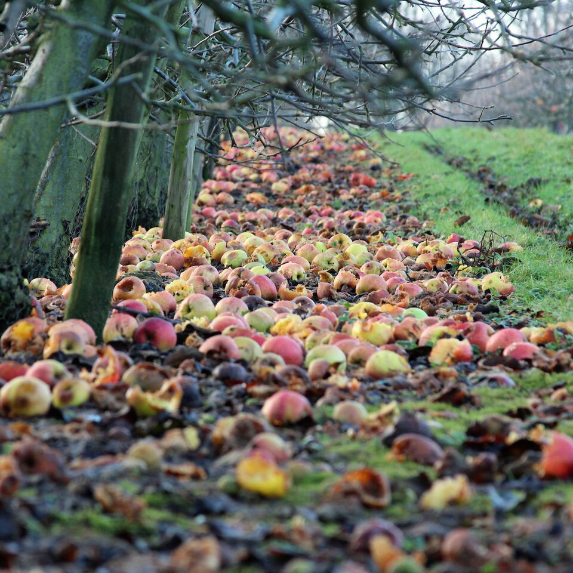
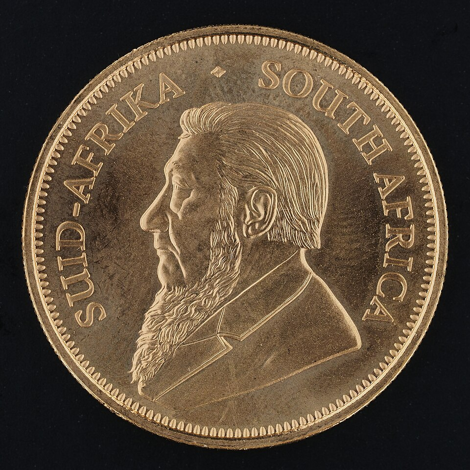
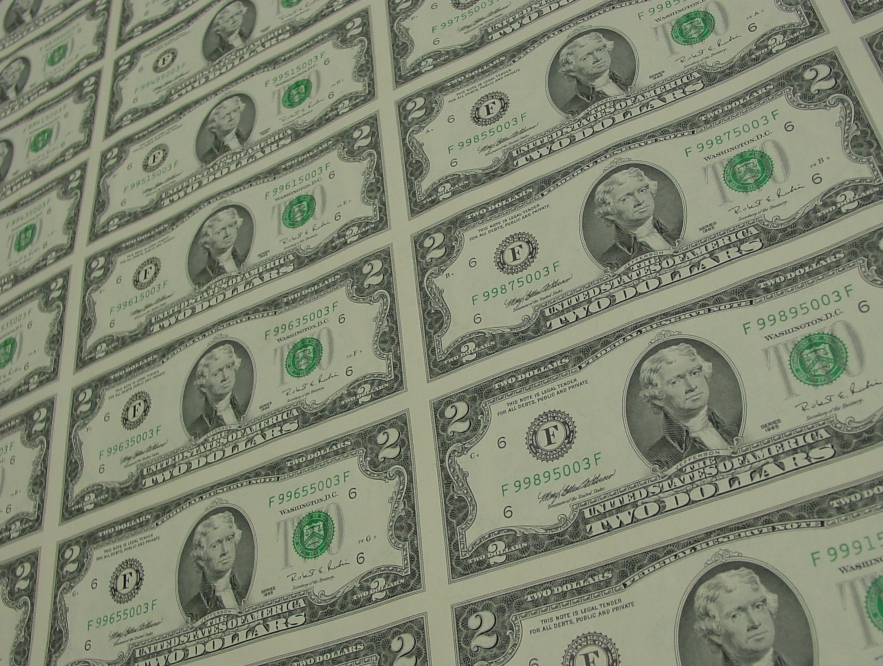
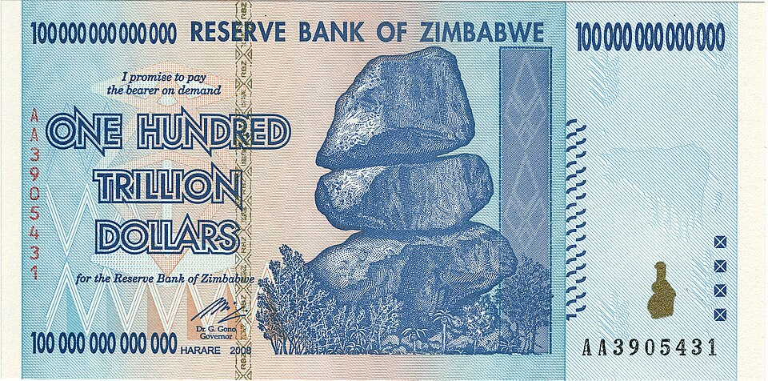
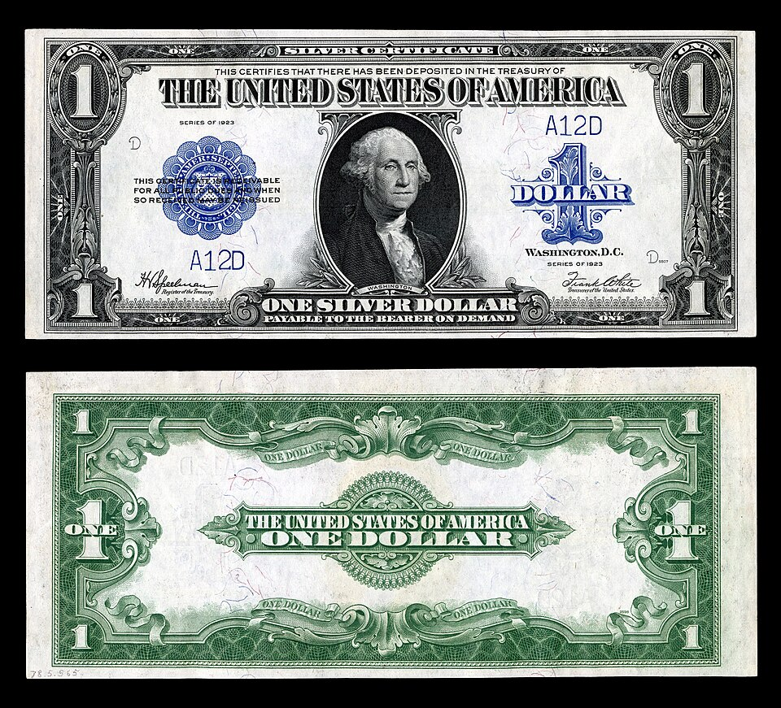
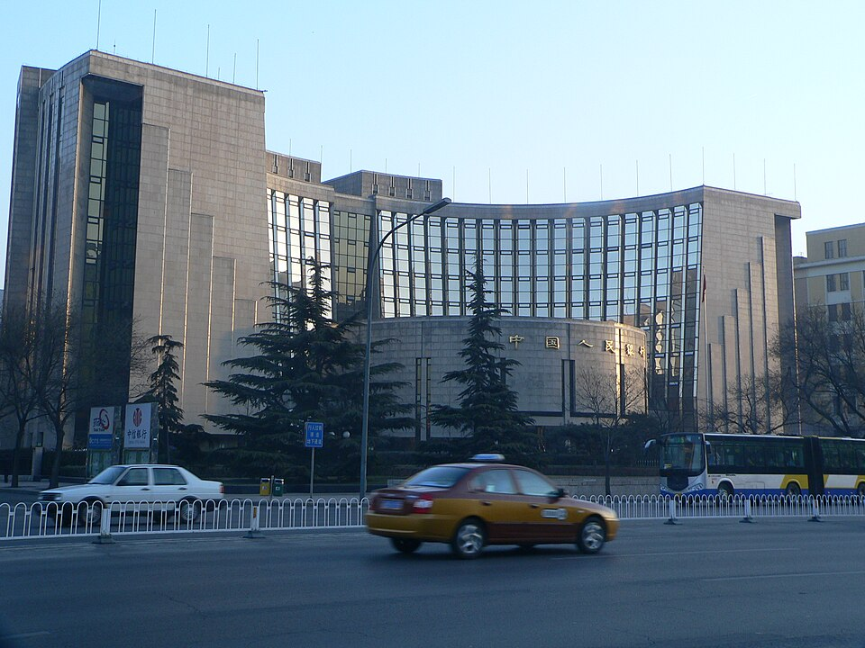

What Is Money?
Barter · the three functions · fiat · and the central bank
What counts as money?
"Any asset"
It is something you own — cash, a bank balance, whatever the society agrees on. Gold, shells and paper have all done the job.
"Accepted as payment"
The test is acceptance, not substance. If everyone takes it to settle a debt, it is money.
Notice what the definition does not say: not "backed by gold", not "issued by a government", not "intrinsically valuable".
Medium of exchange: money makes trading easy
Unit of account: things that cannot be added
Four things one household owns — each in its own unit
| What they own | Its own unit | Priced in money |
|---|---|---|
| Wheat | 300 bushels | $1,500 |
| Cattle | 4 head | $4,000 |
| A worker's time | 160 hours | $2,400 |
| Land | 6 hectares | $30,000 |
| Total wealth = ? | cannot be added | $37,900 |
Bushels, head, hours and hectares are incommensurable — no arithmetic connects them. Price every item in money and they share one unit, so they can be added, compared and accounted for.
Store of value: what happens to wealth you keep

Commodities spoil
Apples rot. Milk sours. Goods leak away whether you spend them or not.

Gold and silver endure
Coin and bullion at once: spend it or melt it. Metal keeps for centuries.

Paper money is a promise
Notes do not rot or break. What they are worth depends on the government that prints them.
The leak: inflation
Which function is it?
To do these jobs, money must be…
| Property | Which function needs it | If the property is missing |
|---|---|---|
| Divisible | Medium of exchange — you must be able to give change | One big stone cannot buy a loaf of bread |
| Durable | Store of value — it must survive being held | Anything that perishes cannot store wealth |
| Limited in supply | Store of value — more of it must not be easy to create | Print without limit and prices run away |
| Widely accepted | Medium of exchange — other people must take it | If nobody takes it, it is not money at all |
| Portable | Medium of exchange — it has to travel with you | A disc you cannot move cannot do daily shopping |
Money got better by fixing one flaw at a time
| Form | What it had going for it | The flaw it still had |
|---|---|---|
| Salt, cloth, cattle | Useful goods everybody wanted — real value | Not durable: salt dissolves, cloth rots, cattle die |
| Cowrie shells | Small, countable, easy to carry | Hard to divide — half a shell buys nothing |
| Gold and silver | Durable, divisible, scarce — they check every box | Heavy and risky to carry around |
| Paper money | Light — a fortune fits in a pocket | Easy to print too much of it |
Each step keeps the properties that worked and fixes the one that failed. The last flaw is the hardest one — see the next page.
When paper money is printed without limit

Zimbabwe, 2008
The government paid its bills by printing money. Prices doubled about every 25 hours, and the peak monthly inflation rate was near 79.6 billion percent.
How it ended
A Z$100 trillion note (January 2009) bought almost nothing. In April 2009 the country abandoned its own money for the US dollar and the South African rand.
Three names the exam uses
| Kind | What stands behind it | Example |
|---|---|---|
| Commodity money | The money is itself a valuable good — it has use value even if nobody accepts it as money | Salt, cloth, cattle, cowrie shells — and above all gold and silver coins |
| Commodity-backed money | Paper you can swap for a fixed amount of metal on demand | The US dollar under the gold standard; a 1923 silver certificate: "payable to the bearer on demand" |
| Fiat money | Backed by nothing but acceptance and legal-tender status | Today's dollar — a Federal Reserve note |
The same metal can appear in two forms: gold as coin is commodity money; a paper note promising gold is commodity-backed money. Take the promise away and only fiat is left.
So what is money, really?
The stone never moves
Ownership passes by agreement, not by delivery. One stone sank — and was still counted as its owner's wealth.
Early money was useful
Salt was eaten, cloth worn, shells strung as jewellery. The stone cannot be eaten, worn or used.

So money is a record
What makes the stone money is that everyone keeps the same account. It is a shared record, nothing more.
Three legs hold up a piece of paper — and how each one can break
1 · Legal tender
The government declares it must be accepted for debts and taxes — so everyone has a reason to take it.
✗ Yuan & Ming paper notes: the state refused its own notes in payment of taxes — trust collapsed and the notes fell out of use.
2 · Limited supply
One issuer controls the quantity. Nobody can print more at will, so the unit stays scarce.
✗ Zimbabwe: printed without limit — prices doubled about every 25 hours (2008), and the money died.
3 · Network acceptance
Everyone else takes it — which is itself the reason you take it.
✗ Supermarket points, Q Coins: accepted only inside their own system — handy there, but not money.
Money is not income, and income is not wealth
Money
A stock. Assets accepted as payment — cash plus checking balances. Answer: "how much do you have right now?"
Income
A flow. Earnings per period — wages, rent, interest, profit. Answer: "how much do you earn per year?"
Wealth
A stock, but wider. The value of everything you own minus everything you owe.
| Example | Which word? |
|---|---|
| Salary of $90,000 per year | Income — a flow |
| $3,000 in cash and checking | Money — a stock |
| House worth $400,000 with a $250,000 mortgage | Wealth of $150,000 |
Fiat money needs a guardian
Who issues it?
A dollar note is not printed by the shop or the bank you use. It is issued by the central bank — look at any bill.
Who holds the press back?
Zimbabwe printed without limit and destroyed its money. "Limited in supply" is not automatic — someone must enforce it.
Who keeps the record honest?
Money is a shared account — the rai stone showed it. At national scale, the central bank keeps that record credible.
Three jobs of a central bank
1 · Sole issuer of currency
It alone creates the notes and coins. You cannot print dollars — it can, and it decides how many.
2 · Banker to the banks
Commercial banks keep their own accounts at the central bank — the reserves. In a panic, it lends to them.
3 · Controls quantity and price
It decides how much money exists and, through interest rates, what borrowing costs. That is monetary policy — later in this unit.
Before central banks — who kept the reserves?
Own vaults
Gold and coin in the cellar, guarded at the bank's own expense. Fine for daily withdrawals — but a magnet for robbers, and useless in a panic.
Goldsmiths & correspondents
17th-century London goldsmiths took deposits for a fee and issued receipts — early banknotes. Later, small banks parked reserves with big-city correspondent banks.
Clearinghouses
Bankers' clubs that netted the day's cheques — and in panics printed emergency loan certificates. Self-help, with one thing missing: a lender of last resort.
Reserves — how the rule came about
The Federal Reserve — the US central bank
1913 — still on gold
The money supply was set by gold output, so the Fed could not create money.
Bank panics
A cash squeeze drained reserves. The 1907 panic toppled sound banks — hence its first job: lender of last resort.
Who runs it
A Board of Governors plus 12 regional Reserve banks. The FOMC — the Federal Open Market Committee — meets eight times a year and sets policy.
What changed later
Only after gold left (1933 at home, 1971 worldwide) could the Fed control the quantity of money.
The Fed is 113 — central banking is 350
The job list grew with time
Central banks did not start with monetary policy. Each function — government's bank, note issuer, lender of last resort — was added by a crisis.
1668 · Sveriges Riksbank
The world's oldest central bank — rebuilt out of the collapse of Europe's first note-issuing bank (Stockholms Banco, 1661).
1694 · Bank of England
Founded to finance a war against France. Over two centuries it became the model: government's bank, note monopoly (1844), banker to the banks.
The FOMC, in detail
Who sits there — 12 votes
The 7 Governors + the president of the New York Fed (permanent) + 4 regional presidents on a yearly rotation. The Chair leads it.
What it decides
The target range for the federal funds rate. The Board of Governors then sets the administered rates that implement it — IORB, ON RRP, discount.
How it runs
Eight meetings a year; a statement after each; the New York Fed's desk executes; every decision is published in an Implementation Note — you can read them like news.
The People's Bank of China

1948 — one country, one bank
Founded in Shijiazhuang from three wartime banks. For decades it was central bank, commercial bank and state cashier at once.
1983 / 1995 / 2003
Commercial banking stripped out; the law fixed its mandate; supervision spun off — leaving monetary policy and macroprudential policy.
Its toolkit — and how it differs from the Fed
It issues the renminbi (including the e-CNY you met in 4.2), sets the RRR and policy rates, and manages the exchange rate and the reserves. Structurally it is one nationwide bank with branches, not a federation of 12 regional banks.
Should the central bank be independent?
The 2025 pressure campaign
President Trump demanded rate cuts all year, called Powell's removal "overdue", and even tried to remove a sitting governor. Markets wobbled at every turn.
The twist — May 2026
Kevin Warsh, nominated by Trump, was confirmed 54–45 (the most divided vote in Fed history) and sworn in at the White House on 22 May. Trump asked for cuts — and "full independence".
And then — 17 September 2026
Under the new chair, the committee raised rates (IORB to 3.90%). Independence means decisions follow the mandate — whoever sits in the chair. In return, the Fed answers to Congress: a legal mandate and twice-yearly testimony.
What to walk out with — fill the blanks
Money is any asset accepted as a ____ — the rai stone shows it needs no ____.
The three functions are the ____, the ____ and the ____ — which require divisibility, durability, limited supply, wide acceptance and portability.
Commodity, commodity-backed, ____ — value runs from intrinsic to pure acceptance.
Fiat money needs a ____: sole issuer, banker to the banks, controller of the quantity.